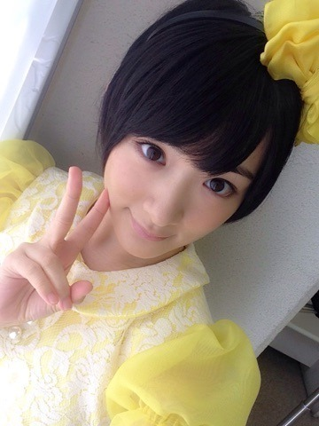
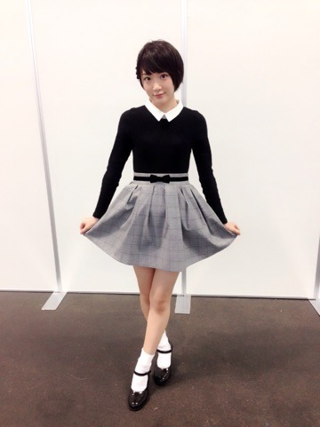

| 2015/04 05 Sun | 名古屋から京都に行 きましたヽ(・∀・)ノ |
昨日は名古屋にて1stアルバム透明な色の個別握手会がありました〜ヽ(・∀・)ノ
来てくださった皆さんありがとうございましたm(_ _)m

13金からの
ガルルからの
制服からの
ぐるカーでした

目隠しっ！！
そして、
今日は京都にて、命は美しいの個別握手会がありましたヽ(・∀・)ノ
来てくださった皆さんありがとうございましたm(_ _)m
今日はガーリーいこちゃんでした


こういうのも好きなんよヽ(・∀・)ノ
あやねっち

せいたん卒業おめでとうヽ(・∀・)ノ
またブログ書きたいと思います！！⭐️
では、
ひめたんの記念すべきレギュラーのラジオのゲストしてきます〜ヽ(・∀・)ノ
らじらー！サンデー聞いてくださいねっ‼︎
へばなっ☆彡
コメント(522)
2015/04/05 20:42